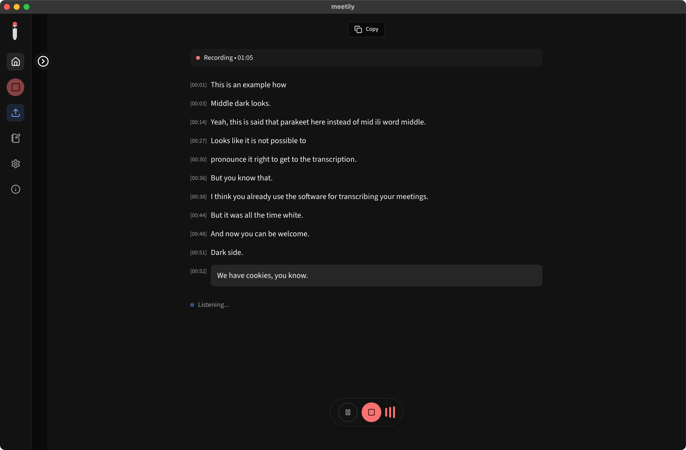
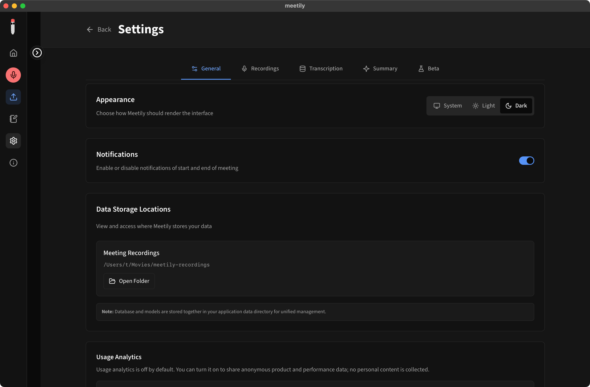

macOS
Apple Silicon DMG
For Macs powered by Apple M-series processors.
meetily-dark-0.4.1-macos-arm64.dmg
Unofficial build · dark-theme-0.4.1
A downloadable build of the privacy-first meeting assistant with a native three-way appearance setting: follow your system, stay light, or switch to dark.

This is not an official Meetily release. Review the build source and only install it if you trust it. The original project is maintained at Zackriya-Solutions/meetily.
Your screen, your choice
Choose Dark or Light explicitly, or select System and let Meetily follow your operating-system appearance automatically.

Release dark-theme-0.4.1
Files are hosted as permanent assets in the GitHub Release. Checksums are available in SHA256SUMS.txt.
macOS
For Macs powered by Apple M-series processors.
meetily-dark-0.4.1-macos-arm64.dmg
Windows
The recommended installer for most 64-bit Windows PCs.
meetily-dark-0.4.1-windows-x64-setup.exe
Windows · alternative
For managed deployment and Windows Installer workflows.
meetily-dark-0.4.1-windows-x64.msi
What this build adds
Meetily records, transcribes, and turns meetings into notes with processing designed to stay on your device. This community build adds the appearance work from upstream PR #575.
System, Light, and Dark are available from one clear setting.
Keep meeting recordings, transcripts, and models on your computer.
Inspect the source, the theme changes, and the build workflow on GitHub.
Before you install
Unsigned packages
These community packages are not signed with an Apple Developer or Windows code-signing certificate, so your operating system may display a warning.